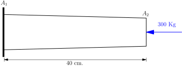
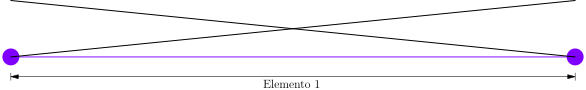
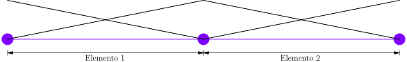

\( L = 40 \ \text{cm} \), \( A_{1} = 25 \ \text{cm}^{2} \), \( A_{2} = 16 \ \text{cm}^{2} \) y \( E = 2000 \ \text{Kg}/\text{cm}^{2} \)

área $$ \begin{equation*} A(x) = 25 - \frac{9}{40} x \end{equation*} $$
la función que interpola la geometría es $$ \begin{equation*} x = \bigg( \frac{1}{2} - \frac{1}{2} \xi \bigg) x_{1} + \bigg( \frac{1}{2} + \frac{1}{2} \xi \bigg) x_{2} \end{equation*} $$
reemplazando $$ \begin{equation*} A(\xi) = 25 - \frac{9}{40} \bigg[ \bigg( \frac{1}{2} - \frac{1}{2} \xi \bigg) x_{1} + \bigg( \frac{1}{2} + \frac{1}{2} \xi \bigg) x_{2} \bigg] \end{equation*} $$
agrupando $$ \begin{equation*} A(\xi) = 25 - \frac{9}{40} \bigg[ \frac{x_{1} + x_{2}}{2} + \bigg( \frac{x_{2} - x_{1}}{2} \bigg) \xi \bigg] \end{equation*} $$
reemplazando \( x_{2} - x_{1} = l \) y \( x_{1} + x_{2} = (2 n + 1) l \) $$ \begin{equation*} A(\xi) = 25 - \frac{9}{40} \bigg[ \frac{(2 n + 1) l}{2} + \frac{l}{2} \xi \bigg] \end{equation*} $$
donde \( l \) es la longitud del elemento y \( n = 0, 1, 2, \ldots \); las funciones de forma son $$ \begin{equation*} \mathbf{N} = \begin{bmatrix} \frac{1}{2} - \frac{1}{2} \xi & \frac{1}{2} + \frac{1}{2} \xi \end{bmatrix} \end{equation*} $$
el jacobiano es $$ \begin{equation*} J = \frac{d x}{d \xi} = \frac{1}{2} x_{2} - \frac{1}{2} x_{1} = \frac{l}{2} \end{equation*} $$
deformaciones $$ \begin{equation*} \mathbf{B} = \frac{d \mathbf{N}}{d x} = \frac{d \mathbf{N}}{d \xi} \frac{d \xi}{d x} = \begin{bmatrix} -\frac{1}{2} & \frac{1}{2} \end{bmatrix} \frac{2}{l} = \begin{bmatrix} -\frac{1}{l} & \frac{1}{l} \end{bmatrix} \end{equation*} $$

para \( l = 40 \) y \( n = 0 \) $$ \begin{equation*} A(\xi) = \frac{41}{2} - \frac{9}{2} \xi \end{equation*} $$
desplazamientos $$ \begin{equation*} \mathbf{N} = \begin{bmatrix} \frac{1}{2} - \frac{1}{2} \xi & \frac{1}{2} + \frac{1}{2} \xi \end{bmatrix} \end{equation*} $$
deformaciones $$ \begin{equation*} \mathbf{B} = \begin{bmatrix} -\frac{1}{40} & \frac{1}{40} \end{bmatrix} \end{equation*} $$
matriz constitutiva $$ \begin{equation*} \mathbf{D} = E \ A = 41000 - 9000 \xi \end{equation*} $$
jacobiano $$ \begin{equation*} J = \frac{dx}{d\xi} = \frac{l}{2} = \frac{40}{2} = 20 \end{equation*} $$
reemplazando $$ \begin{equation*} \int_{-1}^{+1} \begin{bmatrix} -\frac{1}{40} \\ \frac{1}{40} \end{bmatrix} \begin{bmatrix} 41000 - 9000 \xi \end{bmatrix} \begin{bmatrix} -\frac{1}{40} & \frac{1}{40} \end{bmatrix} 20 \ d\xi \begin{bmatrix} u_{1} \\ u_{2} \end{bmatrix} = \begin{bmatrix} F_{1} \\ F_{2} \end{bmatrix} \end{equation*} $$
integrando $$ \begin{equation*} \begin{bmatrix} 1025 & -1025 \\ -1025 & 1025 \end{bmatrix} \begin{bmatrix} u_{1} \\ u_{2} \end{bmatrix} = \begin{bmatrix} F_{1} \\ F_{2} \end{bmatrix} \end{equation*} $$
reemplazando las condiciones de contorno $$ \begin{equation*} \begin{bmatrix} 1025 & -1025 \\ -1025 & 1025 \end{bmatrix} \begin{bmatrix} 0 \\ u_{2} \end{bmatrix} = \begin{bmatrix} F_{1} \\ -300 \end{bmatrix} \end{equation*} $$
resolviendo $$ \begin{align*} F_{1} &= 300 \ \text{Kg} \\ u_{2} &= -0.293 \ \text{cm} \end{align*} $$
Desplazamientos, deformaciones y esfuerzos
Las funciones de forma en coordenadas naturales se transforman a coordenadas globales usando $$ \begin{equation*} x = \bigg( \frac{1}{2} - \frac{1}{2} \xi \bigg) x_{1} + \bigg( \frac{1}{2} + \frac{1}{2} \xi \bigg) x_{2} \end{equation*} $$
despejando \( \xi \) $$ \begin{equation*} \xi = \frac{2}{x_{2} - x_{1}} x - \frac{x_{2} + x_{1}}{x_{2} - x_{1}} \end{equation*} $$
reemplazando \( x_{1}=0 \) y \( x_{2}=40 \) $$ \begin{equation*} \xi = \frac{2}{40 - 0} x - \frac{40 + 0}{40 - 0} = \frac{1}{20} x - 1 \end{equation*} $$
desplazamientos $$ \begin{equation*} u = \mathbf{N} \ \mathbf{u} = \begin{bmatrix} \frac{1}{2} - \frac{1}{2} \xi & \frac{1}{2} + \frac{1}{2} \xi \end{bmatrix} \begin{bmatrix} 0 \\ -0.293 \end{bmatrix} = -0.1465 \xi -0.1465 = -0.007325 x \end{equation*} $$
deformación normal $$ \begin{equation*} \varepsilon = \mathbf{B} \ \mathbf{u} = \frac{d \mathbf{N}}{d \xi} \frac{d \xi}{d x} \ \mathbf{u} = \begin{bmatrix} -\frac{1}{2} & \frac{1}{2} \end{bmatrix} \frac{1}{20} \begin{bmatrix} 0 \\ -0.293 \end{bmatrix} = -0.007325 \end{equation*} $$
esfuerzo normal $$ \begin{equation*} \sigma = E \ \varepsilon = -14.65 \ \text{Kg}/\text{cm}^{2} \end{equation*} $$

Elemento 1
para \( l = 20 \) y \( n = 0 \) $$ \begin{equation*} A(\xi) = \frac{91}{4} - \frac{9}{4} \xi \end{equation*} $$
desplazamientos $$ \begin{equation*} \mathbf{N} = \begin{bmatrix} \frac{1}{2} - \frac{1}{2} \xi & \frac{1}{2} + \frac{1}{2} \xi \end{bmatrix} \end{equation*} $$
deformaciones $$ \begin{equation*} \mathbf{B} = \begin{bmatrix} -\frac{1}{20} & \frac{1}{20} \end{bmatrix} \end{equation*} $$
matriz constitutiva $$ \begin{equation*} \mathbf{D} = E \ A = 45500 - 4500 \xi \end{equation*} $$
jacobiano $$ \begin{equation*} J = \frac{dx}{d\xi} = \frac{l}{2} = \frac{20}{2} = 10 \end{equation*} $$
reemplazando $$ \begin{equation*} \int_{-1}^{+1} \begin{bmatrix} -\frac{1}{20} \\ \frac{1}{20} \end{bmatrix} \begin{bmatrix} 45500 - 4500 \xi \end{bmatrix} \begin{bmatrix} -\frac{1}{20} & \frac{1}{20} \end{bmatrix} 10 \ d\xi \begin{bmatrix} u_{1} \\ u_{2} \end{bmatrix} = \begin{bmatrix} F_{1} \\ F_{2} \end{bmatrix} \end{equation*} $$
integrando $$ \begin{equation*} \begin{bmatrix} 2275 & -2275 \\ -2275 & 2275 \end{bmatrix} \begin{bmatrix} u_{1} \\ u_{2} \end{bmatrix} = \begin{bmatrix} F_{1} \\ F_{2} \end{bmatrix} \end{equation*} $$
Elemento 2
para \( l = 20 \) y \( n = 1 \) $$ \begin{equation*} A(\xi) = \frac{73}{4} - \frac{9}{4} \xi \end{equation*} $$
desplazamientos $$ \begin{equation*} \mathbf{N} = \begin{bmatrix} \frac{1}{2} - \frac{1}{2} \xi & \frac{1}{2} + \frac{1}{2} \xi \end{bmatrix} \end{equation*} $$
deformaciones $$ \begin{equation*} \mathbf{B} = \begin{bmatrix} -\frac{1}{20} & \frac{1}{20} \end{bmatrix} \end{equation*} $$
matriz constitutiva $$ \begin{equation*} \mathbf{D} = E \ A = 36500 - 4500 \xi \end{equation*} $$
jacobiano $$ \begin{equation*} J = \frac{dx}{d\xi} = \frac{l}{2} = \frac{20}{2} = 10 \end{equation*} $$
reemplazando $$ \begin{equation*} \int_{-1}^{+1} \begin{bmatrix} -\frac{1}{20} \\ \frac{1}{20} \end{bmatrix} \begin{bmatrix} 36500 - 4500 \xi \end{bmatrix} \begin{bmatrix} -\frac{1}{20} & \frac{1}{20} \end{bmatrix} 10 \ d\xi \begin{bmatrix} u_{1} \\ u_{2} \end{bmatrix} = \begin{bmatrix} F_{1} \\ F_{2} \end{bmatrix} \end{equation*} $$
integrando $$ \begin{equation*} \begin{bmatrix} 1825 & -1825 \\ -1825 & 1825 \end{bmatrix} \begin{bmatrix} u_{1} \\ u_{2} \end{bmatrix} = \begin{bmatrix} F_{1} \\ F_{2} \end{bmatrix} \end{equation*} $$
Ensamblaje y solución
ensamblando matriz global $$ \begin{equation*} \begin{bmatrix} 2275 & -2275 & 0 \\ -2275 & 2275+ 1825 & -1825 \\ 0& -1825 & 1825 \end{bmatrix} \begin{bmatrix} u_{1} \\ u_{2} + u_{1} \\ u_{2} \end{bmatrix} = \begin{bmatrix} F_{1} \\ F_{2} + F_{1} \\ F_{2} \end{bmatrix} \end{equation*} $$
sumando $$ \begin{equation*} \begin{bmatrix} 2275 & -2275 & 0 \\ -2275 & 4100 & -1825 \\ 0& -1825 & 1825 \end{bmatrix} \begin{bmatrix} u_{1} \\ u_{2} \\ u_{3} \end{bmatrix} = \begin{bmatrix} F_{1} \\ F_{2} \\ F_{3} \end{bmatrix} \end{equation*} $$
reemplazando condiciones de contorno $$ \begin{equation*} \begin{bmatrix} 2275 & -2275 & 0 \\ -2275 & 4100 & -1825 \\ 0& -1825 & 1825 \end{bmatrix} \begin{bmatrix} 0 \\ u_{2} \\ u_{3} \end{bmatrix} = \begin{bmatrix} F_{1} \\ 0 \\ -300 \end{bmatrix} \end{equation*} $$
resolviendo $$ \begin{align*} F_{1} &= 300 \ \text{Kg} \\ u_{2} &= -0.132 \ \text{m} \\ u_{3} &= -0.296 \ \text{m} \end{align*} $$
Desplazamientos, deformaciones y esfuerzos
Las funciones de forma en coordenadas naturales se transforman a coordenadas globales usando $$ \begin{equation*} x = \bigg( \frac{1}{2} - \frac{1}{2} \xi \bigg) x_{1} + \bigg( \frac{1}{2} + \frac{1}{2} \xi \bigg) x_{2} \end{equation*} $$
despejando \( \xi \) $$ \begin{equation*} \xi = \frac{2}{x_{2} - x_{1}} x - \frac{x_{2} + x_{1}}{x_{2} - x_{1}} \end{equation*} $$
Elemento 1
reemplazando \( x_{1} = 0 \) y \( x_{2} = 20 \) $$ \begin{equation*} \xi = \frac{2}{20 - 0} x - \frac{20 + 0}{20 - 0} = \frac{1}{10} x - 1 \end{equation*} $$
desplazamientos $$ \begin{equation*} u = \mathbf{N} \ \mathbf{u} = \begin{bmatrix} \frac{1}{2} - \frac{1}{2} \xi & \frac{1}{2} + \frac{1}{2} \xi \end{bmatrix} \begin{bmatrix} 0 \\ -0.132 \end{bmatrix} = -0.066 - 0.066 \xi = -0.0066 x \end{equation*} $$
deformación normal $$ \begin{equation*} \varepsilon = \mathbf{B} \ J^{-1} \ \mathbf{u} = \begin{bmatrix} -\frac{1}{2} & \frac{1}{2} \end{bmatrix} \frac{1}{10} \begin{bmatrix} 0 \\ -0.132 \end{bmatrix} = -0.0066 \end{equation*} $$
esfuerzo normal $$ \begin{equation*} \sigma = E \ \varepsilon = -13.2 \ \text{Kg}/\text{cm}^{2} \end{equation*} $$
Elemento 2
reemplazando \( x_{1} = 20 \) y \( x_{2} = 40 \) $$ \begin{equation*} \xi = \frac{2}{40 - 20} x - \frac{40 + 20}{40 - 20} = \frac{1}{10} x - 3 \end{equation*} $$
desplazamientos $$ \begin{equation*} u = \mathbf{N} \ \mathbf{u} = \begin{bmatrix} \frac{1}{2} - \frac{1}{2} \xi & \frac{1}{2} + \frac{1}{2} \xi \end{bmatrix} \begin{bmatrix} -0.132 \\ -0.296 \end{bmatrix} = -0.082 \xi - 0.214 = -0.0082 x + 0.032 \end{equation*} $$
deformación normal $$ \begin{equation*} \varepsilon = \mathbf{B} \ J^{-1} \ \mathbf{u} = \begin{bmatrix} -\frac{1}{2} & \frac{1}{2} \end{bmatrix} \frac{1}{10} \begin{bmatrix} -0.132 \\ -0.296 \end{bmatrix} = -0.0082 \end{equation*} $$
esfuerzo normal $$ \begin{equation*} \sigma = E \ \varepsilon = -16.4 \ \text{Kg}/\text{cm}^{2} \end{equation*} $$